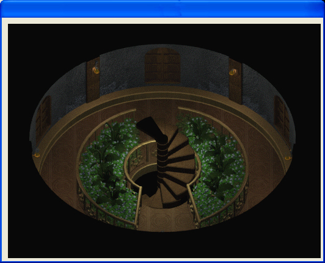
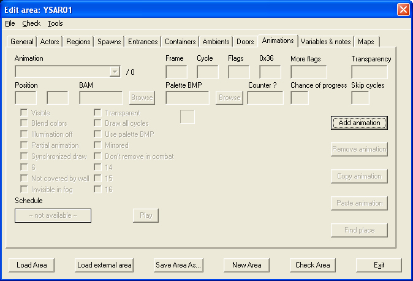
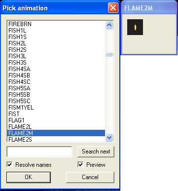
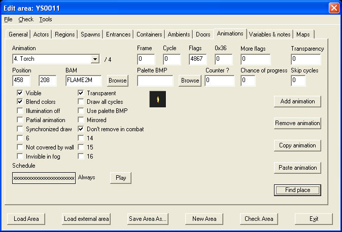
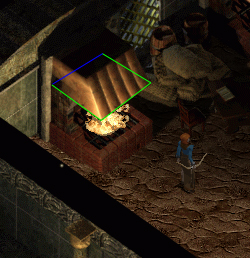
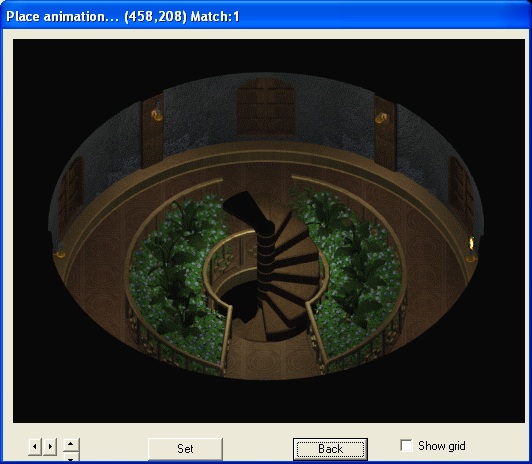
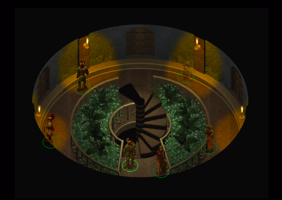

| Version History |
| Introduction |
| Adding the Animations |
Version History
1.0 Initial release 1.0.1 'Not covered by walls' flag information added. 1.0.2 'Draw all cycles' flag warning added. Image 4 updated. Introduction
This tutorial will teach you how to add animations to your area i.e. ambient lighting, fires, special effects etc.. Again, this is a short tutorial because I haven't yet figured out all of the available options; when I do, it will be updated.
Unless you've changed your browser fonts to something weird and wonderful, the conventions in this tutorial are that black is descriptive text and blue bold is action text.
If you haven't already done so, start DLTCEP and load the area you wish to add the animation to. Image 1 shows the area I wanted to work on.
|
 Image 1 - This area needs lighting |
This will get you a blank animations screen (image 2).
|
 Image 2 - The blank animations screen |
You will have some idea of what it is you need to add; in my case I wanted six torches to fill the torch holders (only four are visible because of the play angle). I had some idea of what I required but I didn't know what the bam file was called.
This will popup the list of available bam files (image 3). As I knew I needed some form of small torch, I checked through all the bams labelled with 'fire', 'flame' or some derivative. Eventually, I settled on 'flame2m'
|
 Image 3 - The Bam file |
You can experiment with the display flags - in other words, I don't know what they all do despite some heavy checking - but to get the animation to show correctly in a clear area you need at least the flags that are shown. Don't be tempted to check 'Draw all cycles' - some bams have empty frames and others have multiple animation types within the same frame. In the case of empty frames, this is a known game crasher when used in combination with some .cre effects.
|
 Image 4 - Flags and Bam |
You will have seen the Scheduler before now (see Adding actors if you are not certain of it); use it to set the time of day for your animation. As an indoor illumination, mine was to be active all the time. If you want to run through one cycle of your animation:-
Now, a quick word about that 'Not covered by wall' flag. This works in conjunction with the 'Cover Animations' flag (see 'Area Making - Wallgroups') to prevent animations from displaying over the top of wallgroups e.g. the many kitchen fires scattered about the game. In this example, the fire animation is cut off by the hood over the fire pit. If your animation is going to display over a wallgroup and you don't want it cut off by the wallgroup, then select this flag. I've outlined the wallgroup to make it easier to follow.
|
 Image 5 - Covered by wallgroups |
The final part of this tutorial is to actually place the animation within the scene.
This will bring up a preview of the area.
I will guarantee you will chase some of the bigger animations all over the shop before finally setting them down! Image 6 shows the first torch in place.
|
 Image 6 - First Torch |
Once you have your animation in place, save it. If, like me, you are repeating the same animation multiple times, you can save time and effort by:-
- and the only thing that will need changing is:-
Just about this point I realised that my finished scene was still not lit correctly and I needed to change the background to add reflected light from the torches - see also 'Advanced Lightmapping' for how to improve the standard DLTCEP light maps.
|
 Image 7 - The lit area |
|
Tutorial written by Yovaneth, apprentic’d at Candlekeep during the Bhaalspawn Troubles. Post it where you will but please don’t take credit for what you have not written. |